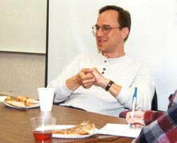
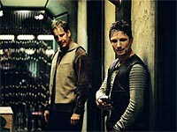

|
| Andr
Bormanis:
cientista
e
roteirista
de
Jornada
 |

|
Trek Brasilis - Muitas pessoas tendem a criticar o status de
Jornada nas Estrelas como um "bom programa de fico cientfica", dizendo que a cincia (a base para textos de fico cientfica) no tratada consistentemente pelo show, desde a
Srie Clssica. Sendo tanto um escritor de Jornada como um cientista, voc poderia nos dizer qual voc acha que a verdadeira relao entre cincia e
Jornada nas Estrelas, e como isso se relaciona com o que podemos ver como "boa fico cientfica"? Andr Bormanis - Jornada nas Estrelas nunca tentou ensinar cincia, ou estar rigidamente fixada nas fronteiras da cincia como a entendemos hoje, mas claramente inspira muita gente a se interessar mais por cincia e tecnologia. Muitos dos cientistas que eu conheo e com quem trabalhei ao longo dos anos citaram Jornada nas Estrelas como uma das principais coisas que os levaram a se interessarem por cincia quando crianas. Foi certamente uma boa parte do que fez me interessar por cincia. TB - Mais do que qualquer outra srie de Jornada (at a original), Enterprise parece ser uma "srie de autor", j que Rick Berman e Brannon Braga so responsveis pela maioria das histrias da srie, e muitos dos roteiros. Voc concorda com isso? E, se esse o caso, isso se traduz numa dificuldade para o escritor regular emplacar sugestes mais significativas na srie? Bormanis - Rick e Brannon claramente moldaram e guiaram essa srie desde o incio e so responsveis pela maioria das histrias que fizemos. Mas a equipe de roteiristas tem uma grande dose de responsabilidade no desenvolvimento das histrias e na evoluo de nossos personagens, e claro que a equipe responsvel pela roteirizao da maioria das histrias que filmamos. TB - Ainda no mesmo tema, os roteiros de todo mundo (incluindo os seus) foram muito rescritos durante a primeira temporada pelos produtores? E qual a situao agora? Bormanis - Quando um roteirista termina a primeira verso de um roteiro, ele ou ela recebe notas de Rick e Brannon e faz as mudanas sugeridas. Se o roteiro ainda precisar de trabalho, Brannon ir se envolver mais diretamente. Esse o jeito que funciona em praticamente toda srie de televiso. TB - At agora sete episdios da segunda temporada foram exibidos nos EUA, nenhum escrito por Andr Bormanis. O que voc pode nos dizer do trabalho que fez at agora na temporada dois? Eu ouvi dizer que "The Communicator" seu (de novo, de uma histria de Berman & Braga), isso correto?  Bormanis - Sim, eu escrevi o roteiro para "The Communicator", e contribu com algumas idias importantes para a histria. Estou tentando desenvolver outra histria agora para meu prximo roteiro. Eu tambm tenho ajudado com notas e trabalhos de polimento em alguns dos outros roteiros dessa temporada, ajudando nas reunies de "quebra das histrias", onde a equipe senta para resolver os detalhes cena-a-cena de uma histria, e analisando sugestes de histrias de escritores free-lancers.TB - Contando "The Communicator" (que parece partir de onde "A Piece of the Action", da Srie Clssica, terminou), muitos outros segmentos de Enterprise parecem muito com episdios das outras sries. Apenas para citar exemplos rpidos, h "Strange New World" (meio parecido com "The Naked Time", "The Naked Now"), "Oasis" ("Shadowplay"), "Vanishing Point" ("The Next Phase", "The Inner Light") e "Precious Cargo" ("The Perfect Mate"), que parecem ser mais que apenas um dja v. Existe uma inteno deliberada dos produtores de voltar a essas histrias apenas para reformul-las com uma nova abordagem, usando o novo ponto de vista de Enterprise? Bormanis - Dado que h mais de 600 episdios de Jornada nas Estrelas produzidos, seria difcil no encontrar similaridades entre episdios de Enterprise e das outras sries. A premissa de "The Communicator" na verdade veio a mim quando eu perdi meu telefone celular uns poucos meses atrs. Eu no estava pensando em "A Piece of the Action", mas claro que h um paralelo a. TB - Qual sua posio a respeito da opinio dos fs na internet? Sabemos que Braga l alguma coisa, Berman parece no dar ateno a isso. E voc? Bormanis - Eu leio as pginas de fs tanto quanto posso. Quando seus comentrios e suas opinies so bem embasadas, eu definitivamente presto ateno, e tento usar aquele feedback para melhorar meu prprio conceito de Enterprise em termos do que est funcionando e do que no est. Alguns dos reviews de fs so incrivelmente inspirados. Uma mulher chamada Michelle Green, por exemplo, escreve sobre todos os episdios da srie, e embora eu no concorde sempre com ela, ela escreve crticas bem interessantes e iluminadoras. Esse tipo de feedback me ajuda a ver a srie de uma perspectiva diferente, o que bem valioso para mim enquanto escritor. TB - Estamos agora, do ponto de vista da produo, na metade da temporada dois. Voc acha que Enterprise j encontrou sua voz? Ou a srie ainda est procurando por seu tom e direo exatos? Bormanis - Acho que encontramos nossa voz. No estou certo de que possa sintetiz-la em umas poucas palavras, mas Enterprise muito uma srie sobre pessoas, exploradores, que so muito acessveis, pessoais, nobres mas no perfeitos, de muitos modos como astronautas e outros aventureiros de hoje. Temos um foco um pouco menor nos elementos de fico cientfica de viagem espacial que as sries anteriores de Jornada nas Estrelas, mas, agora que temos um senso melhor da personalidade da nossa tripulao, acho que vocs vero mais desse tipo de histria. TB - Uma das coisas mais interessantes para os fs at agora tem sido esse esforo de reimaginar espcies vistas ou mencionadas na srie original. Fomos apresentados aos novos Andorianos, e Brannon j mencionou que provavelmente encontraremos os Telaritas em breve. Como voc se sente sobre o trabalho feito at agora com essas espcies? Sobre o futuro, voc acha que os rions, ou os Tholianos, vo acabar voltando? Bormanis - Eu adoro os Andorianos. Acho que eles so timos. Parte da diverso de Enterprise a oportunidade de ver como a humanidade encontra pela primeira vez alguns dos aliengenas que se tornaram familiares audincia nas sries anteriores. Se pudermos criar boas histrias para os Telaritas ou os rions, estou certo de que os veremos. TB - Chris Black foi recentemente promovido a co-produtor-executivo. John Shiban veio a bordo como co-produtor-executivo. Nesses dois casos, os ttulos realmente correspondem a uma definio da funo, ou apenas um mecanismo na indstria para dar a eles maior status e salrio? Em outras palavras, eles so realmente chefes seus, do Phyllis, do Mike e dos outros, ou so apenas colegas que por acaso tm um ttulo mais alto? Bormanis - Somos todos escritores, trabalhamos todos juntos. Brannon, claro, o escritor principal, e Chris e John tm um pouco mais de envolvimento nos aspectos de produo da srie, mas os ttulos principalmente indicam experincia. Chris e John j foram escritores de televiso em tempo integral por sete ou oito anos. Mike e Phyllis esto em sua quarta temporada, e eu na minha segunda. TB - Mesmo no sendo efetivos como produtores-executivos, ter quatro produtores-executivos formais numa srie um evento que, at onde sei, nunca ocorreu em Jornada nas Estrelas. Existe algum barulho no estdio a respeito de algum outro projeto de Jornada, talvez uma nova srie, que justificasse esse aumento na "equipe de chefes"? Bormanis - No que eu saiba. TB - Tivemos vrios roteiristas da primeira temporada que no esto mais na srie. Perdas notveis so Fred Dekker e o casal Andre e Maria Jacquemetton. O que aconteceu nesses dois casos? E, alm deles, Antoinette Stella e Tim Finch tambm partiram. Em todos esses, foi deciso dos produtores no mant-los na equipe? Bormanis - No negcio da televiso, escritores frequentemente se mudam de srie para srie. meio incomum ficar numa srie por mais que uma temporada ou duas. Se um dado escritor vai ou no ficar depende de vrios fatores, e eu realmente no sei de todos os detalhes sobre o porqu de certos escritores terem ficado ou partido, ento no sinto que possa falar disso. TB - Alm de seu trabalho como escritor, voc tambm serve a Enterprise como editor de histrias e, informalmente, consultor cientfico. Deve ser um trabalho bem intenso! Voc poderia nos contar um pouco sobre como a rotina de Andr Bormanis em Enterprise? Bormanis - Na verdade no h uma rotina. Cada dia diferente. Boa parte do tempo eu estou pensando em idias para novas histrias. Alguns dias eu fao um pouco de pesquisa em um elemento "tech" de um roteiro. Felizmente, no fazemos tanta tech em Enterprise como fazamos em Voyager, ento isso usualmente no toma mais que um par de horas por semana. Quebras de histria geralmente consomem metade de um dia por vrios dias, e quebramos uma nova histria a cada duas semanas, em mdia. Quando estou escrevendo a primeira verso de um roteiro, sou deixado em paz por cerca de duas semanas e no fao nada alm daquilo. O resto do tempo gasto fazendo anotaes ou ajudando a polir roteiros conforme vamos os preparando para a produo. TB - Enterprise parece, junto com Deep Space Nine, a srie com mais potencial para mergulhar na poltica de Jornada nas Estrelas, dado que uma Federao Unida de Planetas deveria emergir em uma dcada do incio da srie. Na sua opinio, a srie j comeou a explorar esse potencial? Ela ir mergulhar mais nessas questes? Voc se sente pessoalmente inspirado por esses temas (como o seu "Desert Crossing" parecia sugerir...)? Bormanis - Eu realmente no sou terrivelmente interessado pela poltica da Federao. Histrias polticas tendem a ser um pouco secas e acadmicas. Alm disso, estou muito deprimido com o estado da poltica americana e mundial para querer entrar nesse assunto muito mais! TB - O jeito de Enterprise est muito mais ligado com a NASA e com o programa espacial atual do que as outras sries. Quem o grande f da NASA na equipe de produo que continua nos alimentando com essas pistas de nossas origens no espao, como a cena em que a tripulao de Archer responde a questes enviadas por estudantes da Terra, de forma similar a que astronautas de hoje fazem a bordo do nibus espacial? Bormanis - Como algum que costumava ser pago pela NASA para fazer pesquisa de cincia espacial, assim como um beneficiado por uma bolsa da NASA, eu sou obviamente um grande f da NASA. Assim tambm nosso supervisor de artes de cenrio Mike Okuda. Mike Sussman cresceu na Flrida e tem um profundo interesse no programa espacial atual. Rick e Brannon so os que queriam que nossos personagens parecessem mais com astronautas contemporneos, e ambos so grandes apoiadores da NASA. TB - Falando de NASA, voc no acha que algumas cenas como Gagarin, a estao espacial Mir ou o Sputnik (e "Carbon Creek" no deve ser uma desculpa... ;-)) esto faltando no tema de abertura? Bormanis - Teria sido legal ver algo do velho programa sovitico, que forneceu tanto do mpeto para o programa espacial americano. TB - Voc j era um f de Jornada nas Estrelas antes de se envolver com a srie? Se sim, como se envolver profissionalmente com ela alterou sua apreciao da srie? Bormanis - Eu adorava a srie original quando era garoto, vi a maior parte de A Nova Gerao quando foi ao ar, vi todos os filmes no dia da estria. Trabalhar na srie me fez apreciar o quo incrivelmente difcil produzir 26 horas de televiso todo ano. um milagre que consigamos fazer, o que no se dir de fazermos to bem. TB - Por outro lado, como seus amigos e colegas que voc fez durante sua carreira como fsico viram essa sua transio, da cincia real para a fico cientfica? Bormanis - A maioria deles morre de inveja! TB - Brannon Braga j foi considerado uma espcie de "rebelde" em Jornada nas Estrelas. Ele ainda mantm essa reputao? Bormanis - No estou certo de que a palavra "rebelde" seja acurada, mas ele incrivelmente criativo e passional pela srie. Ele v Enterprise como uma oportunidade tanto de reinventar Jornada nas Estrelas para a audincia do sculo 21 (que ficou um pouco enjoada de viagem espacial) e lev-la de volta s origens, no esprito da Srie Clssica. TB - Agora, vamos a uma lista de perguntas dos leitores do Trek Brasilis. Questo - Roland, de So Paulo (SP), pergunta: Ouvi dizer que Gene Roddenberry era muito seletivo para aprovar novos episdios para A Nova Gerao -- o episdio precisava estar alinhado com o esprito de Jornada nas Estrelas. Como vocs, da equipe de produo, lidam com isso em Enterprise? H um trabalho consciente para manter esse esprito? Quem parece mais preocupado com isso, Rick Berman ou Brannon Braga? Bormanis - Rick e Brannon ambos tm respeito infinito por Gene, como todos ns. Sempre tentamos fazer episdios de que Gene se orgulharia. Espero que estejamos. Questo - Vimos muitos Vulcanos em Enterprise. Apesar disso, nenhum deles usa aquele famoso e popular gesto de mo. Por qu? Os produtores no gostam dele? Bormanis - No interesse de tentar ter uma abordagem nova para Jornada nas Estrelas, queremos ser cuidadosos sobre usar elementos das sries anteriores que acabaram se tornando um clich. Os Vulcanos do sculo 22 no so to abertos ou tolerantes quanto os Vulcanos das eras seguintes. Quando e se fizermos a saudao, queremos faz-la num contexto que faa parecer especial, no rotineiro. E se voc pensar sobre isso, estou certo de que Spock a fez no tantas vezes, talvez meia dzia? Em "Fallen Hero", ouvimos V'Lar dizer "vida longa e prspera". Questo - Embora os produtores digam que Enterprise uma srie mais "p no cho" da famlia de Jornada nas Estrelas, ironicamente no vemos a Terra muitas vezes. Isso especialmente estranho dada a misso vaga da nave. Se essa a principal nave da Terra, eu esperaria que tivesse uma lista mais especfica de alvos, misses e objetivos do que simplesmente ir improvisando no caminho, o que Archer parece estar fazendo um bocado, ao menos na primeira temporada. H algum plano, para o futuro, de envolver a Enterprise em "tarefas" mais importantes em favor do governo terrestre, tanto dando um melhor senso de propsito para a nave como uma olhada mais significativa na posio da Terra na vizinhana interestelar? Bormanis - O propsito da Enterprise explorao. a expedio de "Lewis e Clark" do sculo 22. J que toda a premissa a de que no sabemos o que h l fora, meio difcil ter planos mais especficos, ou tomar posse de novos (para ns pelo menos) planetas. No queremos voltar para a Terra por um bom tempo, porque queremos que a audincia continue a ter a impresso de que a Enterprise est mais longe do que qualquer outra nave da Terra j viajou. A tripulao precisa improvisar s vezes porque quando eles deixaram a Terra, eles tinham muito pouca idia do que esperar. Questo - MoI, de Mogi Guau (SP), pergunta: Quanto vocs, da equipe de roteiristas, estudam para evitar erros de continuidade relativos a dados estabelecidos nas outras sries? Depende de cada roteirista ou tem algum que checa os roteiros depois que os roteiristas os finalizam? Bormanis - Ns todos tentamos prestar ateno continuidade. Depois de cinco sries e dez filmes, mais do que qualquer um possa acompanhar. Vamos "Star Trek Encyclopedia" e assistimos a fitas de velhos episdios quando no estamos certos de algo, mas ainda cometemos erros de vez em quando. Questo - Spider pergunta: Quando vamos ver um brasileiro como oficial snior e com uma funo importante a bordo da nave? Bormanis - Ns raramente mencionamos a nacionalidade dos tripulantes. No sculo 22, a Terra est unificada, e nacionalidade no uma questo to importante quanto hoje. Estou certo de que h pelo menos um ou dois brasileiros na Enterprise, e muitos mais na Frota Estelar. O av de Brannon Braga, por coincidncia, portugus. Questo - Lucas Sasdelli, de Belo Horizonte (MG), pergunta: H um velho rumor desde Voyager sobre uma possvel relao homossexual em Jornada nas Estrelas. Qual sua opinio pessoal sobre isso? Voc acha que poderia ser uma boa? Voc a escreveria? Em caso positivo, que personagens voc usaria? Bormanis - Eu esperaria que no sculo 22 a homossexualidade no fosse estigmatizada tantas vezes como ainda hoje. Como uma questo poltica e social no mundo de hoje, se fssemos contempl-la em Enterprise, provavelmente faramos de um jeito que mostrasse a questo de algum modo interessante e inesperado. Ficaria feliz de escrever um roteiro assim, mas no estou certo de quais personagens eu iria envolver. Iria realmente depender da histria. Questo - Christian Tavares pergunta: Embora o estdio tenha abandonado sua poltica de receber roteiros dos fs, seria possvel sugerir uma histria que pudesse servir de inspirao ou de idia para um episdio futuro de Enterprise? Bormanis - Odeio desapont-lo, mas, a menos que voc tenha um agente, no podemos receber uma sugesto de histria sua. Se voc escreveu roteiros por si mesmo, voc pode mand-los a agentes e, se eles gostarem do seu trabalho, eles o tero como cliente. Foi assim que eu comecei. Questo - Alen Hunka Boksic, de Macei (AL), pergunta: A audincia de Enterprise mostra que a srie no repete o sucesso atingido por outras sries de Jornada -- mesmo Voyager teve nmeros melhores em suas primeiras temporadas. Voc acha que o pblico j est um pouco cansado de Jornada nas Estrelas, especialmente pela promessa dos produtores de 'ar fresco' para Enterprise no ter se concretizado, dado que alguns novos episdios parecem conceitos reciclados criados para as outras sries? Bormanis - Ouch! Na verdade, acho que nossos nmeros este ano esto melhores que os nmeros de Voyager nas ltimas duas temporadas. Eu me preocupo menos com a audincia do que com simplesmente tentar escrever os melhores roteiros que eu puder. Com todos esses diferentes canais de cabo e satlite, h muita competio pelos telespectadores hoje em dia. Questo - Daniel Casss, do Rio de Janeiro (RJ), pergunta: Fazendo algumas contas a partir dos dados fornecidos pelas outras sries, alguns eventos importantes dentro do conceito de Enterprise (por exemplo, as Guerras Terra-Romulus, ou a fundao da Federao) acontecem alm dos sete anos em que a srie provavelmente deve se desenrolar. Isso aponta para uma possvel mudana para a telona depois do fim da srie, mas por ora apenas uma possibilidade entre incontveis outras. A questo : at que ponto o futuro desenvolvimento da srie est planejado? Claro, no falo de finales de temporada ou algo to especfico, mas o planejamento feito por temporada, como em A Nova Gerao ou, lidando com uma prequel, voc toma mais cuidado do que com as outras sries? Bormanis - Ns realmente no temos um plano abrangente para a srie, ou mesmo a temporada. Ns basicamente a encaramos episdio por episdio. Como um escritor, estou muito mais interessado em ver onde a srie est me levando, como sua evoluo est guiando minha imaginao, em vez de tentar ditar do incio exatamente onde ela vai at o seu fim. Questo - Gustavo Leo, de Los Angeles, EUA, pergunta: Com tudo que vemos em termos de design para Enterprise -- os uniformes, o efeito do transporte, a aparncia geral da NX-01 e seus shuttlepods --, a srie parece que foi feita para o sculo 24, no o 22. Eu no vejo nada relacionado ao estilo retr das eras de Pike e Kirk, no h homenagem a Matt Jefferies ou Roddenberry, como a USS Pasteur no episdio final de A Nova Gerao (um bonito tributo classe Daedalus criada por Jefferies e adotada como a principal nave do sculo 22 em vrios episdios de A Nova Gerao e Deep Space Nine). Alm desses aspectos visuais, ns tambm podemos citar o uso precoce de holodecks, Ferengis, Romulanos, cruzadores Klingons idnticos aos da era de Kirk... a lista continua. possvel que a Jornada nas Estrelas do sculo 21, numa tentativa de revigorar e re-imaginar o futuro, tenha perdido sua prpria tradio e seu sentido de histria e cronologia? Bormanis - Acho que voc pode ter razo em termos do exterior da nave, mas acho que o interior reflete um trabalho maravilhoso em equilibrar duas necessidades conflitantes: a) sugerir o futuro da tecnologia espacial atual, e b) sugerir uma nave que exista no passado de todas as outras. Se tentssemos fazer a nave parecer muito "retr", correramos o risco de fazer a srie parecer um atraso com relao aos anos 1950 e 1960. Eu duvido que a tecnologia espacial Klingon evolua to rapidamente. Como os russos, que tm voado essencialmente as mesmas cpsulas Soyuz pelos ltimos quarenta anos, os Klingons encontraram um design que funcionava e ficaram com ele. Questo - Alexandre Bortuluci, de Vitria (ES), pergunta: Voc trabalhou em Jornada nas Estrelas durante as trs ltimas sries. Quais voc acha que so as principais diferenas entre as equipes de roteiristas de DS9, Voyager e Enterprise, em termos de concepo e debate sobre as histrias durante as reunies e durante todo o processo de produo de um episdio? Bormanis - No posso dizer que vejo muitas diferenas. Todos os roteiristas com quem tive a boa sorte de trabalhar foram pessoas talentosas e divertidas. Aprendi muito com todos eles. Questo - Trabalhando como um roteirista para Enterprise, voc est lidando diretamente com a organizao da srie e de seus episdios. Todos sabemos que os produtores tomaram algumas decises arriscadas, como trazer os Ferengis mistura ou trazer os Romulanos de uma forma que alguns consideraram ofensiva ao que havia sido estabelecido antes. O que voc pensa do modo com que os produtores esto lidando com tudo isso? Se a deciso fosse sua, voc tomaria a mesma rota? Bormanis - Acho que lidamos com isso extremamente bem. Se fosse por mim, eu no teria trazido os Ferengis mistura, mas eu ainda acho que foi um episdio divertido. Tomamos muito cuidado, claro, para no revelar a aparncia dos Romulanos, ou sugerir que T'Pol soubesse que eles eram primos distantes dos Vulcanos. Questo - Qual a melhor coisa de trabalhar para Jornada nas Estrelas? E a pior? Bormanis - A melhor coisa a oportunidade de trabalhar com um grupo de pessoas muito talentosas para criar histrias empolgantes e inspiradoras para nosso pblico. O escritor de fico cientfica David Brin me disse recentemente que Enterprise atualmente a nica srie na televiso que sugere que nossos filhos sero melhores do que ns, faro deste mundo um lugar muito melhor e podem fazer grandes coisas de que cada pessoa pode se orgulhar e participar. Eu acho que essa era a essncia da viso de Gene Roddenberry para Jornada nas Estrelas, e estou feliz de ser parte disso. A pior parte a presso e as longas horas! Entrevista realizada em 7 de novembro de 2002. |